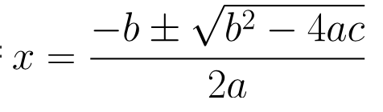
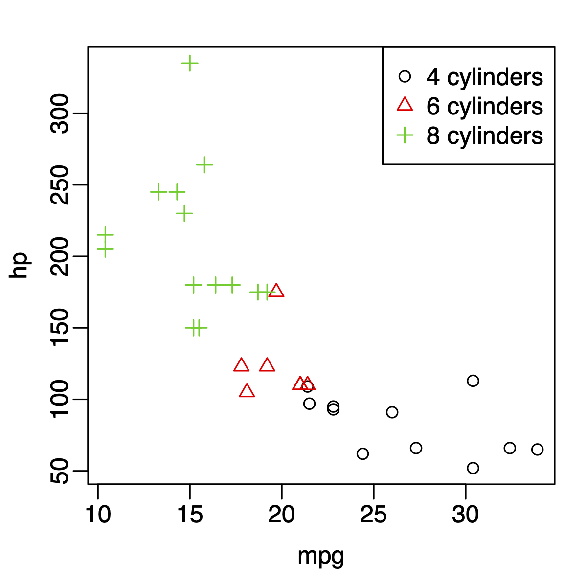
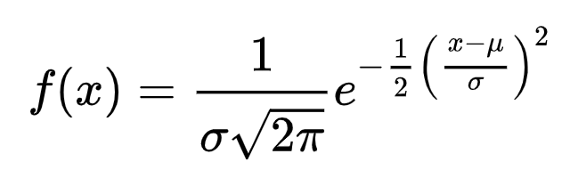

Create a Latex file homework3.tex:
Make a latex document with subsections and subsection. Put in some random text.
Type up the following equations in the tex file:

Create an R markdown file homework3.Rmd, and answer following questions. Pay attention to the format.
Make scatterplot between mpg and horsepowers for
mtcars data, using the plot function. For the
figure, please:
Hint:
type="n" option in the plot
function, and the points function.legend function, I used "topright"
as location instead of giving the x and y coordinates. I think it’s
easier. You can try other similar options, such as
"bottomleft".I expect to see a figure similar to the following:

Create a random matrix with 3 rows and 4 columns.
rowMeans,
colMeans, rowSums, colSums. Use
these functions to repeat the above calculation.For the mtcars data,
if-else. Can you do this more efficiently (with
fewer lines code)?if-else. Again, can you do this more efficiently?Include the equation required for homework3.tex in homework3.Rmd.
Type up the distribution density function for normal distribution (the oft-seen bell-shaped curve) in homework3.Rmd. The density function is

Create an example.Rmd to reproduce everything in http://www.math.mcgill.ca/yyang/regression/RMarkdown/example.html, follow the same style. You can just copy/paste the text so that you don’t have to retype them. What you need to do is to correctly format it.
04 Math.You have learned some R, some markdown, and some Latex. Now it’s time to put them together. From now on, I want a homework submitted in Rmarkdown format, so that the text and R code will be blended together.